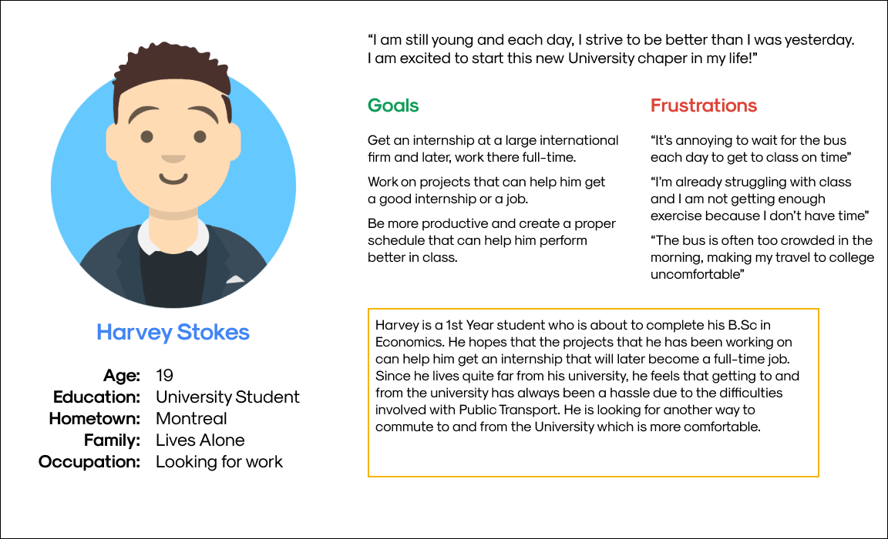
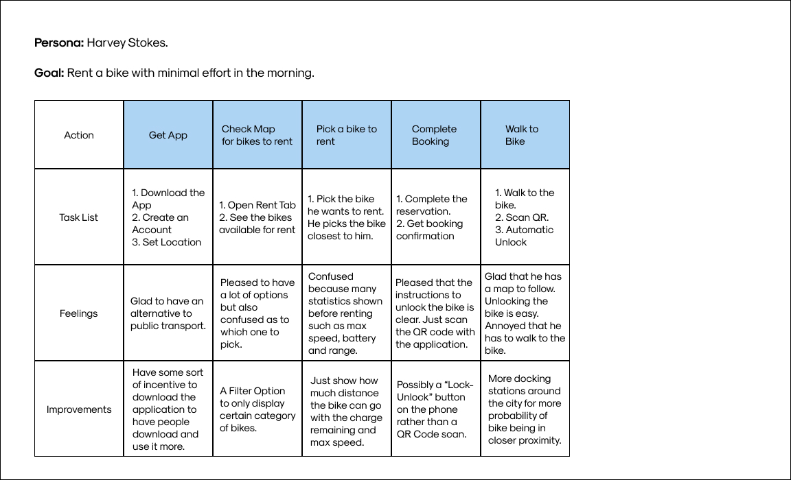

RideOn - Bicycle Renting and Buying Application Design
This is a mobile application concept for a Bicycle Shop based in Montreal. The users will be able to rent all types of bicycles using the application.
My Role and the Duration of this project
I was the only one working on this project so my role was, EVERYTHING! I was responsible for the creation of User Personas, the User Journey, the Storyboards and both the Low-Fidelity and the High-Fidelity Prototype.
Project Duration: March 2021 to April 2021
Defining the Users of the Application and it's Scope
This application can have many types of users. Overall, their goal would be to use the app to rent a bicycle as an alternate way of transport, for sport, for exercise or just to ride around for fun.
Meet the users of Bicycle Application
Based on the previous section, I have illustrated a prospective user personas for the RideOn Application.

Illustrating the User Journey of Harvey Stokes
To get a better understanding about how the users would traverse through the RideOn application, I have created a user journey of how Harvey Stokes would navigate through the application and accomplish his goal of renting a bike to commute to University.

Important Details to keep in mind before designing the Wireframes
Creating a Hypothesis Statement based on the User Persona of Harvey Stokes
If Harvey downloads the RideOn app, he will have achieved his aim of finding an alternative way to work which is his primary goal for installing the application. Additionally, his concern of not getting enough exercise is also fulfilled to some extent. We believe that easy access to the bikes of all kinds for Harvey will increase the frequency at which he uses the application which will be good for him and additionally, the environment (Not the primary goal of the application but a welcome one at that).
User Storyboards
Before I create the wireframes of the application, I have created two storyboards, one illustrating where the users would use the application and another depicting how the users would interact with the application. I thought doing this would give me a clearer understand of how the wireframes should be organised.


Wireframes
I have created a low-fidelity prototype for the application. For this Low-Fidelity Prototype, I focused on the main user journey of the application which covers signing in, picking a bike to rent, renting it, then ending the ride and finally, paying for it. Since the renting feature is going to be the most used one statistically, this was the user journey I wanted to focus on more than the buying and customisation part of the application.
UX Research Study Script
To gain a better understanding about how the users feel about RideOn's application and its main functionality of being able to book a bicycle to rent, I have created a UX Research Script. The script contains information about the desired participant groups, the tasks that the users will have to do on RideOn's application, the follow-up questions that will be asked regarding the tasks. After the users complete this task, we will get a much better idea about what features are easy to use, what features need to improve and more importantly, how to improve the features that the users have faced issues with.


Comments on the High-Fidelity Prototype
In the high-fidelity prototype, I only focused on the main user journey. Additionally, I do have some suggestions on how to make this a better product. Firstly, the map can be better but I was limited in my options from Stock Images. Secondly, a better icon for the destination. For now, I am using a chequered flag to indicate the destination but it can certainly have a more suitable icon.
If this project were to come to life, the company would definitely use an existing map integration such as Google Maps rather than develop their own and most of the issues mentioned above would be solved.
Also, I only focused on the renting part of the application and not on the buying part because when I had the initial idea, I thought it made sense for it to go together. But as the application idea began to develop, it did not make sense that the company renting out bicycles would also sell them so I decided to remove it from the application.
Map Update 13/04/2021: I have updated the picture of the map using a Figma plugin. I feel that this map would be a more accurate representation of the final product as it follows the dark theme of the application. Additionally, the icons are easier to see in this version of the map.
My takeaways from this design process
This is my first full process of designing an application and I really enjoyed doing it. Especially when I consider the fact that this idea was generated through a Sharpen prompt, I am happy that I could think of design solutions to the problem. I took some inspiration from Dribbble for the visual design of the application but for the interaction part, I designed all of it and I tried to keep it as simple and seamless as possible.
I also learnt how to always focus on keeping the main user journey of the application as clean as possible while also making the interaction easy to learn, even for those new to technology. That is why I added both icons and labels to the description rather than just using either labels or icons.
As I am constantly trying to be a better designer, feedback is always appreciated so please do not hesitate to contact me. Thank You for reading my project, I hope you liked it! :)